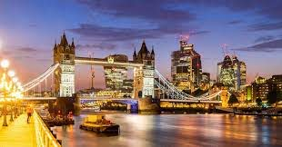
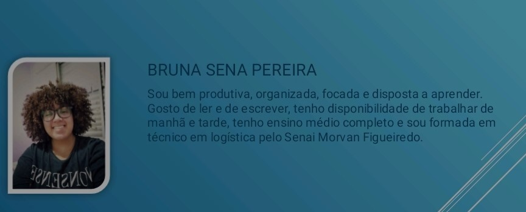

Meus Sonhos e minhas metas
São Paulo, 20/08/2020 - Sobre meus sonhos
.jpg)
Minhas metas e sonhos são quase todas voltadas para meu lado profissional,
tenho a meta de me formar na faculdade de ciências biológicas e fazer uma expecialização em zoologia e atuar nesta mesma área;
Pretendo empenhar meu tempo para realizar projetos para reconstrução e proteção de animais silvestres, tenho o sonho de viajar para
as áreas de conservação da vida animal pelo mundo.
Quero também fazer uma segunda faculdade, de medicina veterinária e montar um pet shop com o intuito de resgatar e cuidar de cães e gatos abandonados ou em situação de maus tratos.
Um sonho que tenho há muitos anos é viajar pela Europa, mais expecificamente, Londres, pois sempre achei um local bonito e interessante,
gostaria de fazer um intercâmbio para lá;
Tenho o sonho de morar na Australia e se possível, fazer uma especialização em biologia marinha
em uma faculdade australiana.
Limitações e Possíveis soluções
São Paulo, 20/08/2020 - Sobre limitações e soluções
Como todo mundo, eu tenho algumas limitações que podem vir a impedir de realizar minhas metas e sonhos, a primeira delas é a entrada em uma faculdade, sabemos que é difícil de
ingressar em uma faculdade pública e que alguns cursos nas privadas são extremamente caros, além de que as melhores faculdades são bem concorridas;
Outra limitação seria conseguir o investimento para montar uma clínica veteninária, esse tipo de investimento é realmente muito cara e ainda tem a
preocupação de o negócio acabar não dando certo no final.
Tenho um plano para o futuro, assim que começar a trabalhar sempre guardarei uma certa quantia de dinheiro e não mexerei nela, afim de que no futuro eu tenha uma boa quantidade de dinheiro guardada para realizar minhas viagens ou até mesmo começar a investir na clínica veterinária.


Sonhos e Crenças
São Paulo, 20/08/2020 - Sobre Sonhos e crenças
Acredito que a vida deva ser aproveitada ao máximo, ela é curta e passageira, devemos realizar nossos sonhos e desejos, sem precisar machucar ou humilhar os outros para tal, ser confiante, honesto e distribuir amor e carinho é o mais importnte para se viver. Temos que entender que somos humanos e erramos e que esta tudo bem com isso, só precisamos levantar e tentar novamente.
Fico um pouco decepcionada quando as coisas não dão certo, porém eu continuo tentando, pois sei que chegarei lá; eu estou bem empenhada para realizar minhas metas, estudo e estou a procura de emprego, não costumo colocar prazo para realizar minhas metas, ainda tenho bastante tempo e sei que não importa quanto tempo demore, eu vou realizar todos os meus sonhos.
KANBAN
São Paulo, 26/10/2020

Sobre o KANBAN
Kanban é um cartão de sinalização que controla os fluxos de materiais e produção em uma indústria. No curso do Camp Jabaquara aprendi a usar o Kanban no controle das atividades do dia a dia. Uso para planejar minhas atividades de aprendizado e domésticas. Pretendo usar o kanban nas atividades profissionais.
Na pandemia
São Paulo, 15/06/2020 - O que faço para passar o tempo;
Aqui tem como eu passo o meu tempo nesta pandemia, você pode pegar algumas dicas e
começar a praticar.
Tem também tem alguns trabalhos que surgiram por conta da pandemia, talvez te expire a
começar seu negócio.
Trabalhos na Pandemia
São Paulo, 15/06/2020 - Alguns trabalhos que surgram na pandemia;
Aqui tem também tem alguns trabalhos que surgiram por conta da pandemia, talvez te expire a
começar seu negócio.
Este trabalho foi feito em conjundo com a Bianca, Amanda, o João Marcos e Guilherme.
Mini Currículo
São Paulo, 26/10/2020
Missão, Visão e Valores

Quadro dos sonhos

Dicas de como montar seu currículo
Neste video há algumas dicas de como montar um bom currículo e esta
preparado para uma boa entrevista.
O video foi feito em conjunto com a Amanda, Ricardo e Guilherme.